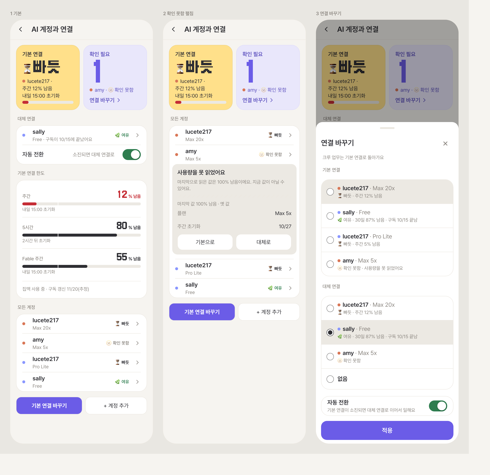
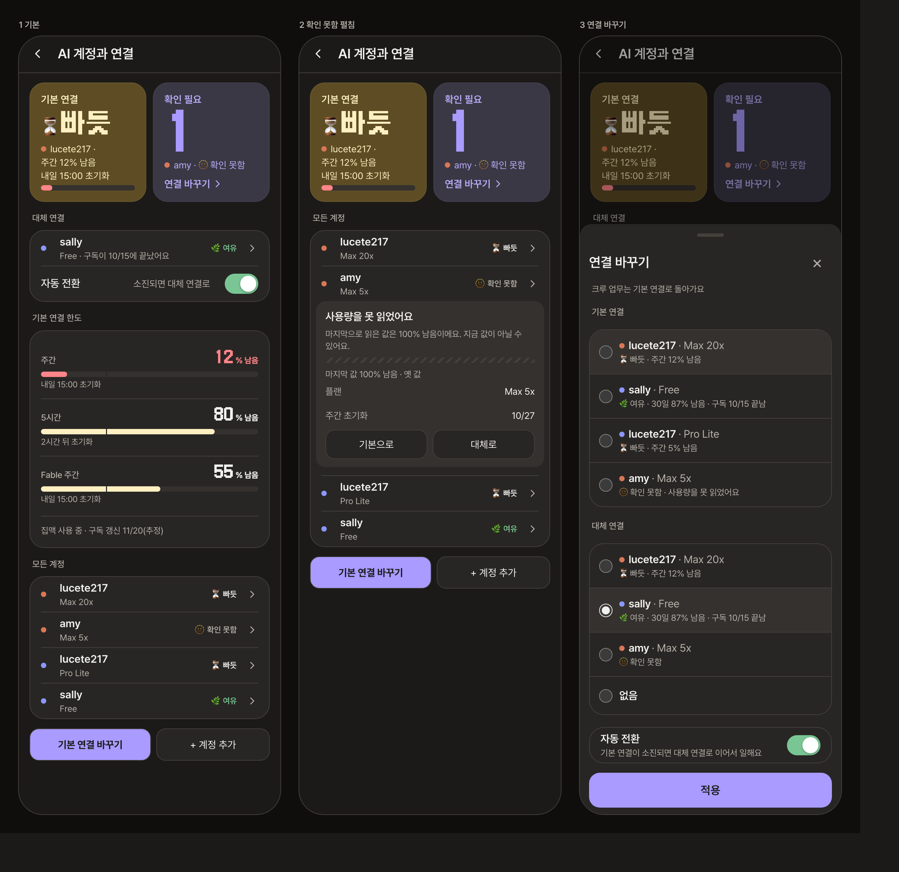
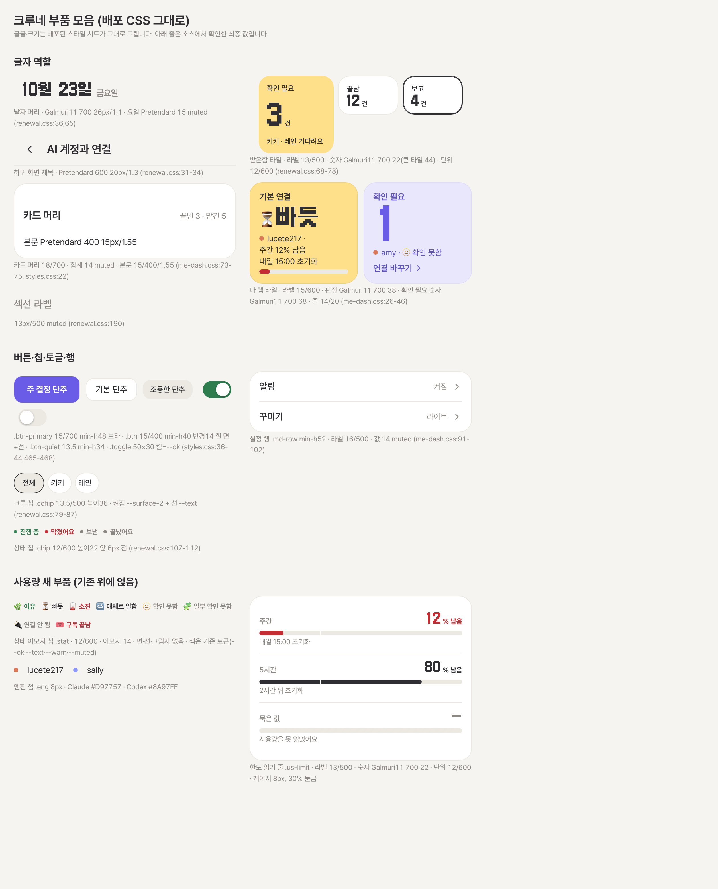
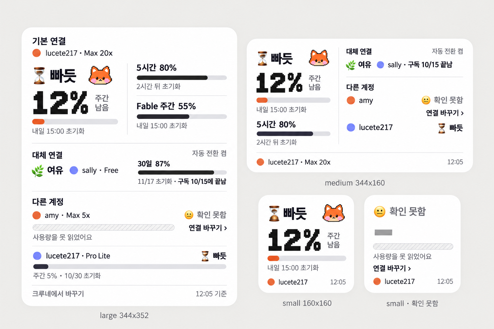

크루네 사용량 시안 5차
이번에는 그림을 새로 그리지 않고, 배포된 크루네의 스타일 시트를 그대로 불러 같은 글꼴과 부품으로 화면을 직접 만들었습니다. 상태는 이모지와 글자로, 엔진은 색 동그라미로 구분합니다.
상태 이모지
동그라미 모양은 엔진 색과 헷갈려서 뺐고, 항상 글자와 함께 씁니다. 확인 못함은 처음 ❔로 했다가 밝은 화면에서 거의 안 보여 🫥로 바꿨습니다. 밝은 화면과 어두운 화면에서 14px로 직접 확인했습니다.
| 상태 | 표시 | 언제 |
|---|---|---|
| 여유 | 🌿 | 남음 30% 초과 |
| 빠듯 | ⏳ | 남음 30% 이하 |
| 소진 | 🪫 | 남음 0%, 넘어갈 계정 없음 |
| 대체로 일함 | 🔁 | 소진됐지만 대체 계정으로 이어서 일함 |
| 확인 못함 | 🫥 | 사용량을 못 읽음 |
| 일부 확인 못함 | 🧩 | 한도 일부만 읽음 |
| 연결 안 됨 | 🔌 | 기본 계정이 없음 |
| 구독 끝남 | 🎟️ | 이용권 만료 (판정 데이터는 아직 없음) |
크루네 사용량 화면추천 구성
나 탭에 이미 있는 두 타일(사용량, 확인 필요)을 그대로 키운 구성입니다. 왼쪽 노란 타일이 기본 연결, 오른쪽 연보라 타일이 확인이 필요한 계정이고 「연결 바꾸기 ›」 링크가 거기 있습니다. 아래는 대체 연결, 한도, 모든 계정이 각각 한 덩어리 목록입니다. 글꼴과 크기는 배포 화면 값 그대로입니다. 왼쪽부터 기본, 확인 못함 펼침, 연결 바꾸기입니다.


크루네 부품 모음
배포된 화면 전체에서 뽑은 글자 역할과 부품입니다. 아래 줄은 소스에서 확인한 최종 값이고, 마지막 묶음이 사용량 화면에 새로 얹은 부품입니다(상태 이모지 칩, 엔진 점, 한도 읽기 줄과 게이지).

위젯
같은 상태 이모지와 엔진 점을 쓰고, 값을 못 읽은 줄에는 「연결 바꾸기 ›」 링크가 붙습니다. 위젯은 애플 시스템 글꼴이 기준이라 크루네 화면 글꼴과 다릅니다. 큰 숫자만 픽셀 글꼴입니다.

규격 문서와 배포 화면이 달랐던 곳
기존 규격(10/18)과 배포 코드를 비교해 보니 값이 다른 곳이 많아서, 코드 값을 정본으로 하는 v1.1 초안을 만들었습니다.
| 항목 | 기존 규격 | 배포 화면 |
|---|---|---|
| 탭 큰 제목 | 픽셀 글꼴 33px | 날짜만 픽셀 글꼴 26px(나 탭 28) |
| 하위 화면 제목 | 24px 굵게 | 20px 중간 굵기 |
| 카드 제목 | 18px, 굵기 650 | 18px, 굵기 700 |
| 본문과 입력 | 16px | 본문 15px, 입력 14px |
| 작은 타일 숫자 | 33px | 22px |
| 단추 반경, 시트 반경 | 16, 24 | 14, 18 |
| 스위치 켜짐 | 정해 둔 값 없음 | 초록(진행 중 색) |
| 선택 표시 | 잉크색 | 코드는 보라색이 남아 있음 |
정해 주실 것
- 보조 글자 색이 밝은 화면에서 대비 3.2대 1로 낮습니다. 규격의 진한 값으로 되돌릴지 정해 주세요.
- 스위치 켜짐을 지금의 초록으로 둘지, 선택 표시처럼 잉크색으로 할지 정해 주세요.
- 사용량 단계를 계정 화면처럼 3단(여유, 빠듯, 소진)으로 맞출지, 나 탭 타일처럼 보통을 넣은 4단으로 둘지 정해 주세요.
- 노란 색을 받은함의 확인 필요 타일과 사용량 타일이 같이 써도 되는지 정해 주세요.
- 시트 닫기를 지금처럼 오른쪽 ×로 둘지, 애플 최신 지침처럼 왼쪽 「닫기」와 오른쪽 「완료」로 할지 정해 주세요.